Выявленная средняя линия нормируемого отверстия должна быть расположена между двумя параллельными плоскостями, которые находятся друг от друга на расстоянии 0,06 и перпендикулярны базовой оси А, см. рисунок ниже
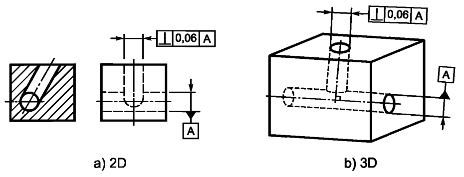Поле допуска ограничено двумя параллельными плоскостями, которые расположены друг от друга на расстоянии, равном значению допуска t, и перпендикулярны базовой оси, см. рисунок ниже
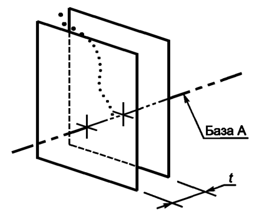Выявленная средняя линия нормируемого цилиндра должна быть расположена между двумя параллельными плоскостями, которые находятся друг от друга на расстоянии 0,1, перпендикулярны базовой плоскости А и параллельны базовой плоскости В, см. рисунок ниже
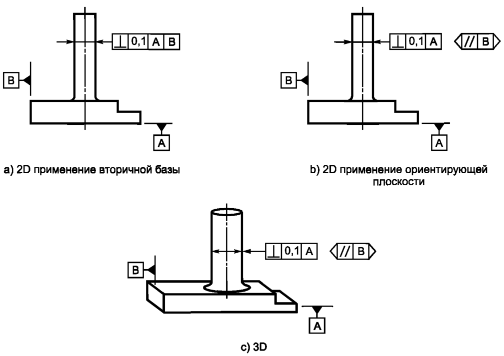Поле допуска ограничено двумя параллельными плоскостями, которые расположены друг от друга на расстоянии, равном значению допуска t, перпендикулярны базе А и параллельны базе В, см. рисунок ниже
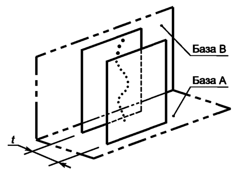Выявленная средняя линия нормируемого цилиндра должна быть расположена между двумя парами параллельных плоскостей, которые перпендикулярны базовой плоскости А. При этом расстояния между плоскостями равны 0,2 (в первой паре) и 0,1 (во второй паре). Кроме того, согласно указанным направлениям соединительных линий рамок допуска (совпадают с направлениями ширины соот ветствующих полей допуска) и вторичной базе, см. рисунок (a) ниже, или согласно указанным знакам ориентирующих плоскостей, см. рисунок (b) ниже, первая пара плоскостей должна быть параллельна, а вторая — перпендикулярна базовой плоскости В.
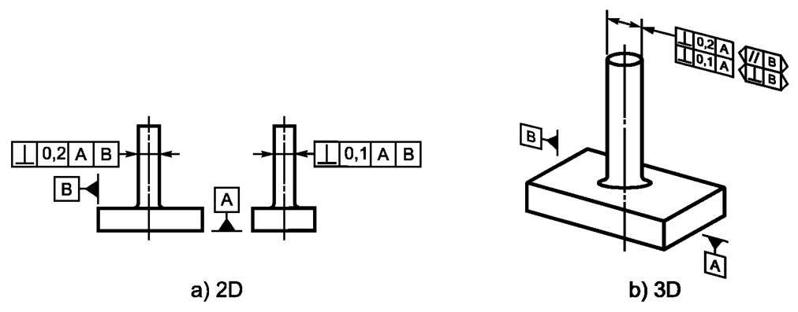Поле допуска ограничено двумя парами параллельных плоскостей, расстояния между плоскостями в которых равны 0,1 и 0,2, перпендикулярными базе А. Кроме того, плоскости расстояние между которыми равно 0,1, перпендикулярны базе В, см. рисунок слева ниже, а плоскости, расстояние между которыми равно 0,2, параллельны базе В, см. рисунок справа ниже
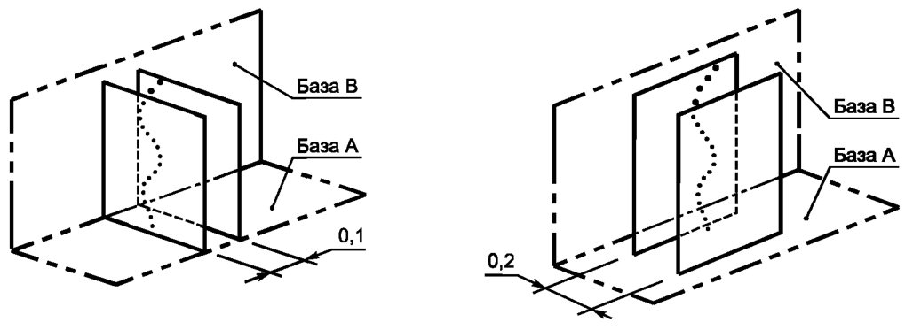Выявленная средняя линия нормируемого цилиндра должна быть расположена внутри цилиндрической области, диаметр которой равен 0,01, а ось — перпендикулярна базовой плоскости А, см. рисунок ниже
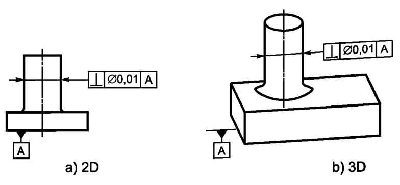Поле допуска ограничено цилиндром, диаметр которого равен значению допуска t (если перед зна чением допуска указан знак«ф»), а ось — перпендикулярна базовой оси, см. рисунок ниже
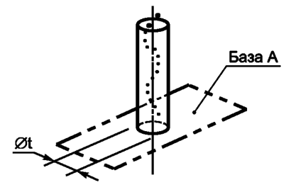Выявленная нормируемая поверхность должна быть расположена между двумя перпендикулярными к базовой оси А параллельными плоскостями, расстояние между которыми равно 0,08, см. рисунок ниже
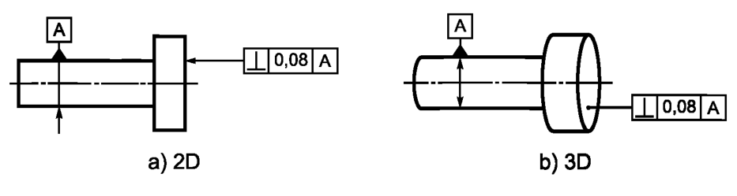Поле допуска ограничено двумя параллельными плоскостями, которые расположены друг от друга на расстоянии, равном значению допуска t, и перпендикулярны базе, см. рисунок ниже
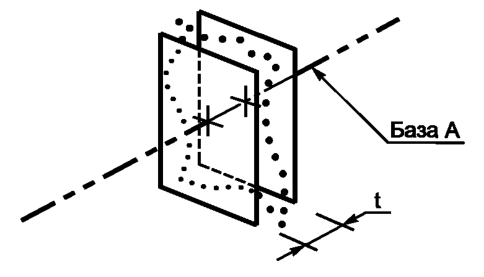Выявленная нормируемая поверхность должна быть расположена между двумя перпендикулярными к базовой плоскости А параллельными плоскостями, расстояние между которыми равно 0,08, см. рисунок ниже
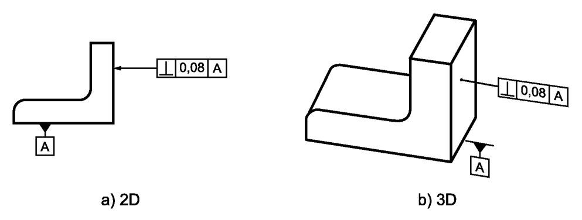Поле допуска ограничено двумя параллельными плоскостями, которые расположены друг от друга на расстоянии, равном значению допуска t, и перпендикулярны базе, см. рисунок ниже
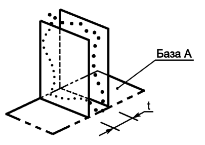